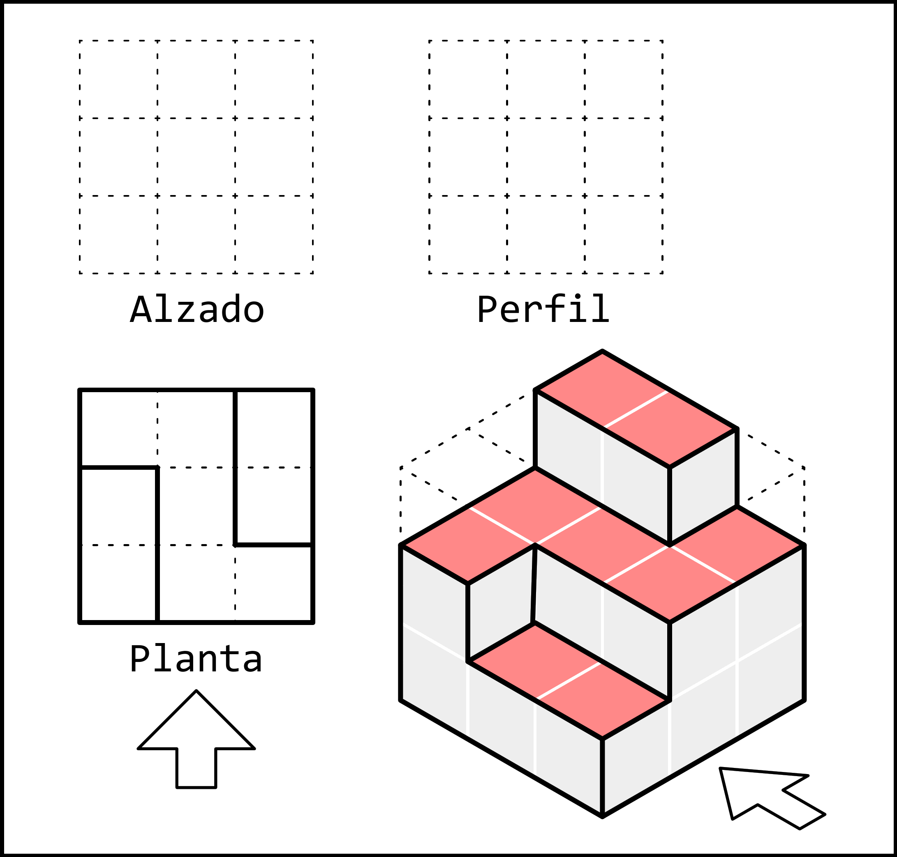
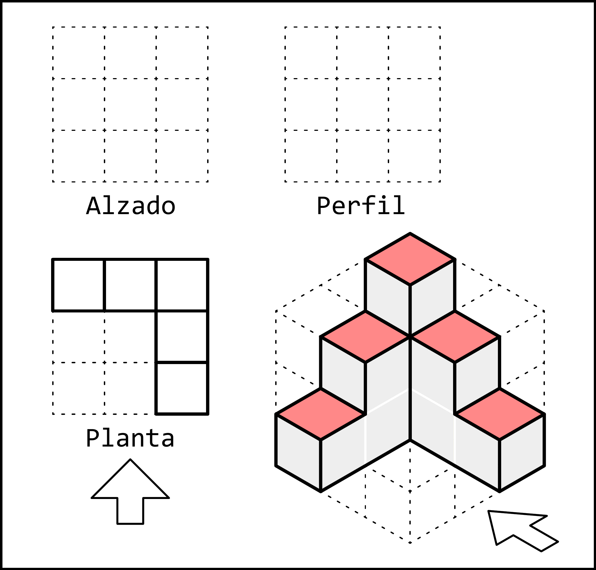

3. Top view¶
The top view is the view of a part as seen from above.
The top view mainly shows the width and depth of the part, but it does not show its height.
In the following examples, in addition to the top view, the arrow indicating the front view is also shown. This arrow is not normally drawn. It will help us orient ourselves and determine which part of the top view is in the lower area, close to the front view, and which part is in the upper area, farther from the front view.
Examples¶
In the following examples, the different faces of the three-dimensional part that can be seen from the direction of the top view are shown in red.
The edges that form the side view are also shown. These are the lines that we need to draw in the view.
The top view should not be colored or filled with gray: only the visible edges are represented using thick continuous lines.
In the top view, it is important not to confuse the orientation of the different shapes. To help us, we can draw an arrow below the top view indicating the direction of the front view.
The shaded areas that can be seen from above indicate that we need to draw two rectangles, one narrow and one wider. The narrow rectangle is to the right of the arrow, and its longer side follows the same direction as the arrow. With this guide, it is easy to draw the same shape in the top view with the correct orientation.
We must keep in mind that height is not represented in the top view, because this view only shows width and depth. Therefore, the two rectangles will be drawn together even though they have different heights.

In this part, we can see a square to the left of the arrow and close to it. Once the square has been drawn, the two rectangles are easy to draw. One is 3 units wide and is farther from the arrow. The other is 2 units deep and is to the right of the arrow.

In this part, we can see three shapes. The greatest difficulty is likely to be the middle-height shape, which forms a kind of Z shape. For this reason, we will first draw the two simple rectangles. Both have their longer side oriented in the direction of the arrow. One is to the left of the arrow and close to it, while the other is to the right of the arrow and farther away.
Once the rectangles have been drawn, the Z-shaped figure is easy to draw because it fills the entire remaining space.
{kind=link}

In this last figure, we can see a total of five squares located at different positions and heights. As we already know, height is not represented in the top view, so we only need to pay attention to the position of each square.
With the help of the arrows, we can place each square in its correct position, keeping in mind that the corner close to the arrow and to its left must remain empty.
{kind=link}
